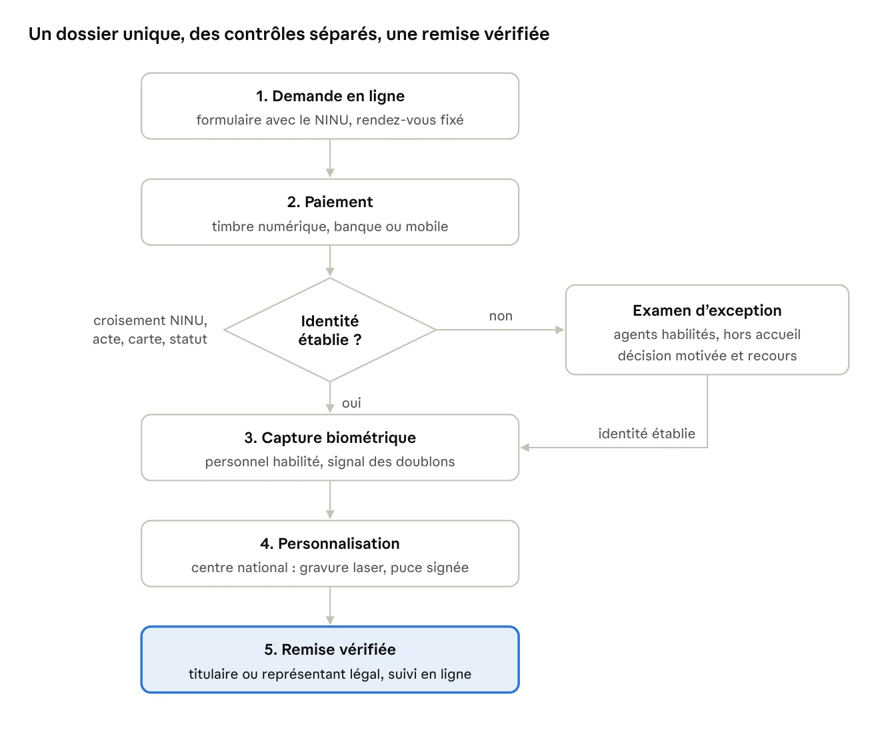
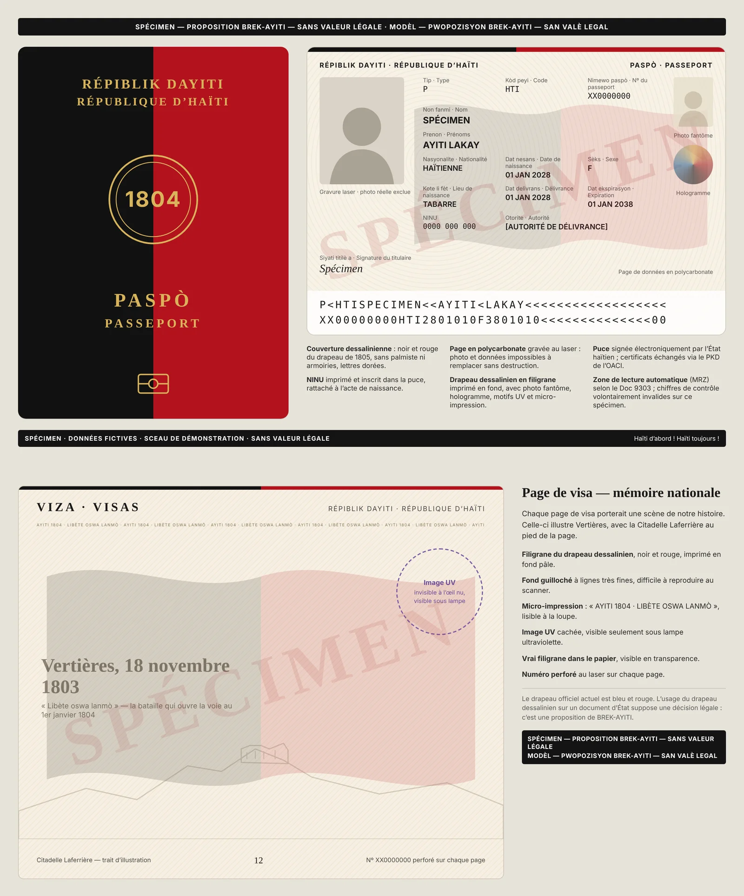

RÉFORMES ET PROPOSITIONS · 15 NOVEMBRE 2026
L'émission du passeport en Ayiti
Perspectives de BREK-AYITI : simplifier le service, réduire la fraude, rendre au passeport ayitien le respect du monde
Par la rédaction de BREK-AYITI — 15 novembre 2026
Le passeport est la signature de la nation devant le monde. BREK-AYITI propose un circuit simple pour le citoyen, conçu pour réduire les possibilités de fraude, détecter les anomalies et établir les responsabilités, sous contrôle haïtien. Ce dossier prolonge notre proposition sur la réforme de l'État civil.
Pourquoi le passeport est une affaire de souveraineté
Aux frontières, chaque agent étranger juge Ayiti en quelques secondes, en ouvrant notre passeport. S'il doute du document, il doute de l'État qui l'a délivré, et le citoyen paie ce doute en visas refusés, en contrôles humiliants et en portes fermées.
Pour le citoyen à l'intérieur, le passeport est souvent un parcours d'obstacles : files d'attente, intermédiaires, délais, frais informels. Ce double échec, à l'extérieur et à l'intérieur, a une même racine : un circuit qui ne garantit ni la vérité de l'identité ni l'intégrité du service.
BREK-AYITI pose un principe : un Ayitien, une identité vérifiée, un passeport respecté.
Le processus actuel et ses failles
Le circuit actuel a gagné en technologie, mais il a montré en 2026 qu'il pouvait être corrompu de l'intérieur.
Le parcours du demandeur
Le passeport relève de la Direction de l'Immigration et de l'Émigration (DIE), sous le ministère de l'Intérieur. Une compilation officielle canadienne couvrant 2014 à 2016 décrit un parcours comprenant rendez-vous, paiement du timbre et dépôt de pièces, avec un centre de production au pays et un autre à Washington. Elle documente une période passée ; les démarches et tarifs actuels doivent être présentés séparément. [1]
Selon un avis de la DIE daté du 6 janvier 2026, rapporté par la presse, le NINU à dix chiffres remplace le NIF dans le logiciel de personnalisation des passeports, et la carte nationale est exigée des demandeurs de plus de 18 ans. Cette mesure ne supprime pas le NIF dans les démarches fiscales. [2]
Les failles documentées
Les retards. Le 17 août 2024, HaitiLibre a rapporté une suspension temporaire de la production annoncée à compter du 19 août, afin de traiter 10 154 passeports bloqués au contrôle et jamais livrés. Ce chiffre décrit la situation à cette date, pas le stock actuel. [3]
L'affaire des « vrais-faux » passeports. Le 23 mars 2026, le directeur de la DIE, Antoine Jean Simon Fénélon, et neuf autres cadres ont été interpellés dans une enquête sur l'émission présumée de passeports irréguliers. Ils ont été remis en liberté le 27 mars, après leur audition au parquet de Port-au-Prince ; l'enquête se poursuivait alors. Aucune décision définitive ultérieure n'a été retrouvée. Les personnes concernées restent présumées innocentes. [4][8]
L'arrêt du service. Le 25 mars 2026, Le Nouvelliste constatait que tous les bureaux de la DIE étaient à l'arrêt, en Haïti comme à l'ambassade de Washington. Ce constat daté ne décrit pas la situation actuelle. [5]
Les intermédiaires. En 2015, la presse rapportait des frais d'agence de 7 500 à 10 000 gourdes, bien au-delà du timbre officiel. Ces montants sont historiques, et tout frais d'agence n'est pas une fraude ; ils montrent cependant le coût d'un circuit opaque. [1]
La diaspora. Dans une communication du 5 août 2025, le gouvernement annonçait près de 60 000 passeports délivrés via l'ambassade à Washington depuis janvier. Ce bilan déclaré n'est pas un audit indépendant. [6] Une circulaire du ministère des Affaires étrangères datée du 1er octobre 2026 fixe, à partir du 5 octobre, les montants perçus à l'étranger à 150 dollars pour un adulte et 125 dollars pour un mineur. Elle déclare illégaux les frais supplémentaires et met fin aux services d'urgence et d'extrême urgence. BREK-AYITI demande que tarifs et délais soient affichés et contrôlés. [9]
Le diagnostic de BREK-AYITI : le problème n'est pas seulement le livret. C'est l'identité en amont, l'intégrité du personnel et le contrôle de la chaîne.
Le circuit proposé par BREK-AYITI
Un dossier unique, plusieurs contrôles complémentaires confiés à des personnes différentes, et aucun intermédiaire entre le citoyen et l'État.

Circuit d'émission proposé par BREK-AYITI · 5 étapes, 1 contrôle d'identité
Ce qui change pour le citoyen et pour l'État :
Zéro paiement informel : demande en ligne ou assistée, paiement traçable, rendez-vous fixé par le système.
L'identité avant le livret : le NINU est rapproché de l'acte de naissance et de la carte nationale. Un dossier absent ou incohérent part en examen, pas en rejet automatique.
Des contrôles séparés : accueil, vérification documentaire, capture biométrique, personnalisation et remise relèvent de personnes différentes, pour qu'aucun agent ne décide seul.
La biométrie comme aide, pas comme preuve absolue : elle aide à confirmer l'identité et à signaler des doublons. Toute anomalie exige une vérification, avec une solution adaptée aux mineurs et aux personnes dont les données ne peuvent être correctement capturées.
Une remise sûre : la remise comprend une vérification sécurisée de l'identité. Les modalités pour les représentants légaux et une éventuelle livraison sont encadrées. Personne n'est exclu pour une impossibilité physique de fournir une empreinte.
Chaque geste tracé : chaque agent signe numériquement ce qu'il fait. Un passeport irrégulier laisse une trace et un responsable.
Zéro papier, zéro guichet : le principe du tout-numérique
Notre objectif est clair : aucun document déjà détenu et vérifiable par l'État ne doit être redemandé au citoyen. C'est une cible, conditionnée à la numérisation et à l'exactitude des registres.
Les faux timbres, les faux actes et les passeports irréguliers prospèrent là où un papier est remis à un agent qui décide seul s'il est bon. Les échanges numériques et la séparation des tâches réduisent ces occasions. L'automatisation ne rend pas les données vraies par elle-même et ne supprime pas la responsabilité humaine.
Ce que la machine vérifie seule
L'acte de naissance, retrouvé dans la base de l'État civil grâce au NINU, lorsqu'il y figure. Sinon : recherche administrative, numérisation authentifiée ou procédure légale de reconstitution.
La carte d'identification nationale, lue par sa puce et rapprochée du demandeur.
Le timbre fiscal numérique : rattaché à une demande et à une référence de paiement, consommé une seule fois et rapproché de la comptabilité publique. Les règles d'annulation, de remboursement et de reprise après incident sont publiées.
Les doublons, signalés par la comparaison biométrique puis vérifiés par un agent habilité.
Le statut des documents, consulté dans les fichiers des documents perdus ou volés, selon leurs règles d'accès.
Le rôle des humains au centre
Dans les centres, des orientateurs accompagnent les usagers en créole et en français. Ils ne décident de rien et ne manipulent aucun argent. La capture, les vérifications et la remise restent sous la responsabilité de personnels habilités.
Les dossiers incomplets ou contradictoires sont examinés par des agents habilités, distincts de l'accueil, avec des délais publiés et une capacité de relève. Il faut séparer anomalie, dossier incomplet et soupçon de fraude : un dossier absent de la base n'est pas un dossier frauduleux. Les décisions défavorables sont motivées, notifiées de façon compréhensible et susceptibles de recours.
La condition préalable
Ce système ne fonctionne que si l'État civil est numérisé. Tant qu'un acte de naissance n'existe que sur papier, il doit être numérisé et vérifié une seule fois, par l'État civil, et jamais à l'Immigration. C'est pourquoi la réforme du passeport marche avec celle de l'État civil.
Les garde-fous
Comptes nominatifs, habilitations minimales, double contrôle des actes sensibles et audits indépendants.
Échanges de données limités à une finalité légale, sans accès général à toutes les données d'une personne.
Demande assistée pour qui n'a ni téléphone, ni compte bancaire, ni maîtrise de l'écrit ; paiement possible par un réseau agréé.
Alimentation de secours et réception hors ligne sécurisée ; l'émission est suspendue quand une vérification indispensable est indisponible.
Règle BREK : zéro papier inutile, zéro paiement informel, un service humain accessible, sans pouvoir discrétionnaire incontrôlé au guichet.
Le document : un passeport aux normes des meilleurs
Le futur modèle serait conçu pour satisfaire les spécifications applicables du Doc 9303 de l'OACI. Les choix de matériaux, de biométrie et de sécurité seraient validés par des essais indépendants avant toute émission.
| Élément | Ce que propose BREK-AYITI |
|---|---|
| Puce biométrique | Photo et empreintes, signées électroniquement par l'État haïtien |
| Page de données | Polycarbonate gravé au laser, photo secondaire, impossible à remplacer sans destruction |
| Sécurité visible | Hologramme, encres qui changent de couleur, micro-impression |
| Sécurité cachée | Motifs visibles seulement sous ultraviolet, fils de sécurité, numéro perforé sur chaque page |
| Design national | Pages illustrées de notre histoire : 1804, la Citadelle, Vertières, nos héros, nos paysages, nos langues |
| Numéro unique | NINU imprimé et inscrit dans la puce, relié à l'acte de naissance |
L'adhésion au PKD de l'OACI
Le PKD facilite l'échange des certificats et des informations nécessaires à la validation des passeports électroniques. Il ne garantit ni l'exactitude de l'identité initiale ni l'acceptation du voyageur. Haïti n'apparaît pas dans la liste publique des participants consultée lors de la révision : BREK-AYITI demande de confirmer officiellement son statut, puis de chiffrer et programmer les moyens d'une participation effective. [10]
Le lien avec Interpol
Les documents déclarés perdus, volés, révoqués ou invalides seraient signalés aux canaux habilités, notamment à la base SLTD d'INTERPOL selon ses règles. Une alerte réduit les risques d'utilisation frauduleuse, sans garantir son interception à chaque frontière. La SLTD porte sur le statut des documents : ce n'est pas un registre permettant de certifier l'identité civile d'un demandeur. [11]
Production, contrats et souveraineté des clés
Ayiti peut acheter le livret vierge à l'étranger, mais elle doit garder le contrôle de l'identité, des données et des clés.
Deux temps
Immédiatement : un audit des capacités existantes, en Ayiti et à l'étranger. La priorité est de sécuriser et moderniser la personnalisation, les stocks et les clés de signature. Tout nouveau fournisseur est choisi par appel d'offres public, avec transfert de compétences et clauses de sortie.
À moyen terme : un centre national de personnalisation renforcé, où l'impression des données, la gestion des clés et le contrôle qualité se font chez nous, par des Ayitiens formés et contrôlés.
Les exigences non négociables
Les clés cryptographiques qui signent les puces appartiennent à l'État haïtien, jamais au fournisseur.
La base de données est hébergée sous contrôle haïtien, avec copie de secours sécurisée.
Le contrat est publié : prix unitaire, durée, volumes, pénalités, clauses de sortie.
Les stocks de livrets vierges sont comptés, numérotés et audités chaque trimestre. Un livret vierge volé est une arme entre les mains d'un faussaire.
Chaque opération dans le système est tracée au nom de l'agent qui l'a faite.
C'est la même exigence que BREK-AYITI porte sur les contrats de sécurité : pas de contrat opaque sur ce qui touche la souveraineté.
Le passeport dans le SDM et pour la diaspora
Le Système décentralisé mixte (SDM), publié par BREK le 14 septembre 2018, fixe la carte territoriale. Le passeport s'y ancre ainsi ; cette articulation est une proposition d'aujourd'hui. [7]
| Niveau | Rôle pour le passeport |
|---|---|
| Commune | Information du citoyen, vérification de l'acte de naissance |
| Chef-lieu de département (10 mairies) | Centre de capture biométrique et de remise des passeports |
| Région (préfet) | Inspection et lutte contre la fraude |
| National | Autorité de l'identité, centre de personnalisation, clés, lien avec le PKD et Interpol |
Les dix chefs-lieux constitueraient un maillage initial. Des services mobiles et des points complémentaires seraient définis selon la population, les distances, l'accessibilité et la sécurité des déplacements, pour que le citoyen de Jérémie, de Hinche ou de Fort-Liberté n'ait plus à traverser des zones dangereuses. Un préfet ou un maire ne devient pas pour autant agent de délivrance : seuls les personnels habilités instruisent et remettent. Le déploiement commencerait dans les structures existantes, sans attendre la réorganisation complète du SDM.
La diaspora
Les consulats deviennent des centres de capture, reliés à la base nationale, avec les mêmes standards qu'en Ayiti.
Des missions consulaires mobiles dans les grandes communautés : Floride, New York, Boston, Montréal, Saint-Domingue, Santiago, Paris, Chili, Brésil.
Le suivi du dossier en ligne, les tarifs officiels affichés, et une remise sécurisée au consulat ou une livraison encadrée.
Feuille de route et exigences
Le passeport suit le calendrier de la réforme de l'État civil : sans identité fiable, pas de passeport fiable.
0 à 12 mois : audit indépendant de la DIE et des stocks de livrets ; publication des contrats ; fin du dépôt par intermédiaires ; paiement uniquement par banque ou mobile ; adhésion au PKD de l'OACI.
1 à 3 ans : nouveau modèle de passeport en polycarbonate ; dix centres de capture dans les chefs-lieux ; consulats reliés à la base nationale.
3 à 5 ans : centre national de personnalisation ; base d'identité unique reliant acte de naissance, carte et passeport.
Ce que BREK-AYITI exige maintenant
La publication des suites de l'enquête sur les passeports irréguliers, ouverte après les interpellations du 23 mars 2026 et la remise en liberté du 27 mars, dans le respect de la présomption d'innocence, et l'annulation des passeports frauduleux identifiés.
La publication du contrat de production des passeports et des cartes, et la confirmation du statut d'Haïti au PKD de l'OACI.
Le vetting de tout le personnel de la DIE, comme pour la PNH.
Un délai officiel de délivrance et des tarifs affichés, publiés et respectés, avec suivi du dossier en ligne.
Aux candidats à la présidence, nous posons la question : comment rendrez-vous au passeport ayitien le respect du monde ?
Un passeport respecté commence par un État qui se respecte.
Haïti d'abord ! Haïti toujours !
— La rédaction de BREK-AYITI, Brigadiers de la Révolution Classique
Annexe : spécimen du passeport ayitien proposé
BREK-AYITI propose une couverture aux couleurs dessaliniennes : le noir et le rouge du drapeau de 1805, sans palmiste ni armoiries, avec un sceau sobre portant « 1804 » et des lettres dorées. La page de données, bilingue créole et français, porte le drapeau dessalinien en filigrane imprimé en fond, et illustre la gravure laser sur polycarbonate, la photo fantôme, l'hologramme, le NINU et la zone de lecture automatique.
Chaque page de visa porterait une scène de notre mémoire nationale, comme Vertières et la Citadelle Laferrière, sur un fond guilloché avec le drapeau dessalinien en filigrane, une micro-impression « AYITI 1804 · LIBÈTE OSWA LANMÒ », une image visible seulement sous lampe ultraviolette, un vrai filigrane dans le papier et le numéro du passeport perforé sur chaque page.
Le drapeau officiel actuel est bleu et rouge : l'usage du drapeau dessalinien sur un document d'État suppose une décision légale. C'est une proposition de BREK-AYITI.
Ce modèle illustre une proposition. Il ne constitue ni un document officiel ni un modèle homologué : données fictives, photo remplacée par une silhouette, sceau de démonstration et chiffres de contrôle volontairement invalides. Le choix des couleurs et des symboles nationaux d'un passeport relève de l'autorité légale compétente.

Sources
IRB Canada via ecoi.net, « Haiti: Requirements and procedures to obtain a passport (2014-2016) » — ecoi.net
IciHaiti, 10 janvier 2026, « Passeport : Haïti passe du NIF au NINU » — icihaiti.com
HaitiLibre, 17 août 2024, suspension temporaire de la production de nouveaux passeports — haitilibre.com
Le Nouvelliste, 25 mars 2026, « Vers la désignation d'un directeur a.i. à l'Immigration » — lenouvelliste.com
Le Nouvelliste, 25 mars 2026, « Les bureaux de l'Immigration à l'arrêt en Haïti et à l'étranger » — lenouvelliste.com
HaitiLibre, 6 août 2025, « Délivrance de passeports, avancées majeures » — haitilibre.com
BREK, « Système décentralisé mixte », 14 septembre 2018 — brek-ayiti.pages.dev/#sdm
Le Nouvelliste, 27 mars 2026, « Immigration Director and Staff Freed as Investigation Moves Forward » — lenouvelliste.com
Caribbean National Weekly, 7 octobre 2026, circulaire du ministère des Affaires étrangères du 1er octobre 2026 sur les frais de passeport à l'étranger — caribbeannationalweekly.com
OACI, participants au PKD — icao.int
INTERPOL, base SLTD des documents de voyage et d'identité — interpol.int